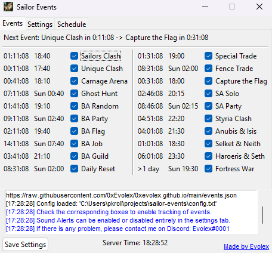
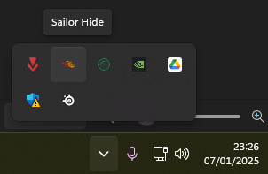
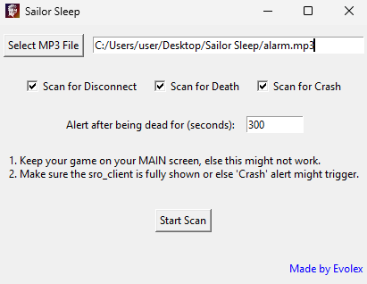

| Preview | Description | Download |
|---|---|---|
 |
Sailor Events An app that notifies you for upcoming events on the Sailor PE Server. Less functionality than the current website version, however still preferred by some. May be flagged as a virus, for more info on why that happens and how to fix it feel free to DM me. |
Download |
 |
Sailor Hide An app that allows you to hide the Sailor Client in the icon tray bar. Useful if you want to hide the client from the task bar while at work. (You might have to run this as admin, else it wont have the permission to hide the client.) |
Download |
 |
Sailor Sleep An app that scans your screen for certain images periodically. If a DC window, a death window or a client crash has been detected it will trigger a sound alarm. Useful when wanting to be notified of those occurences when sleeping. |
Download |